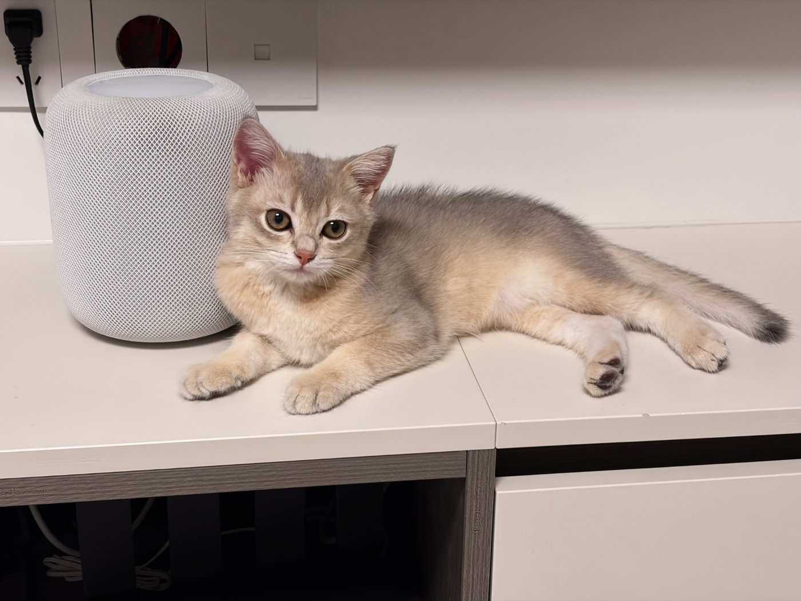
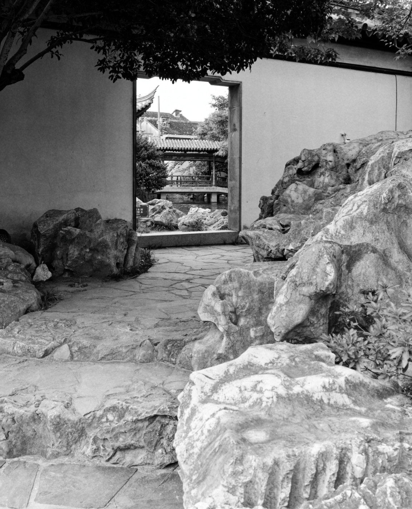
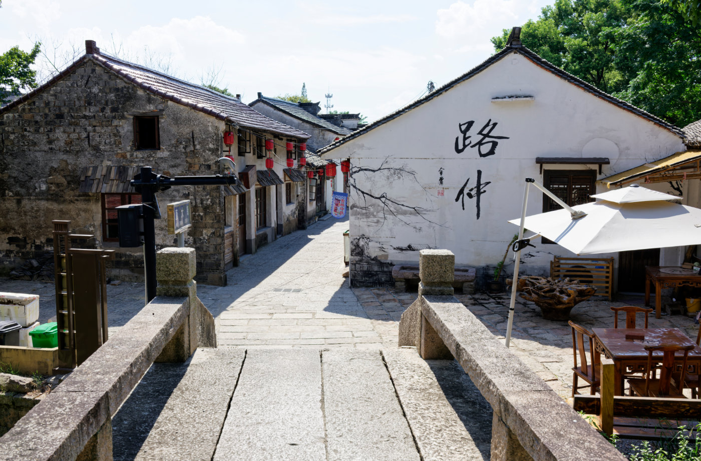
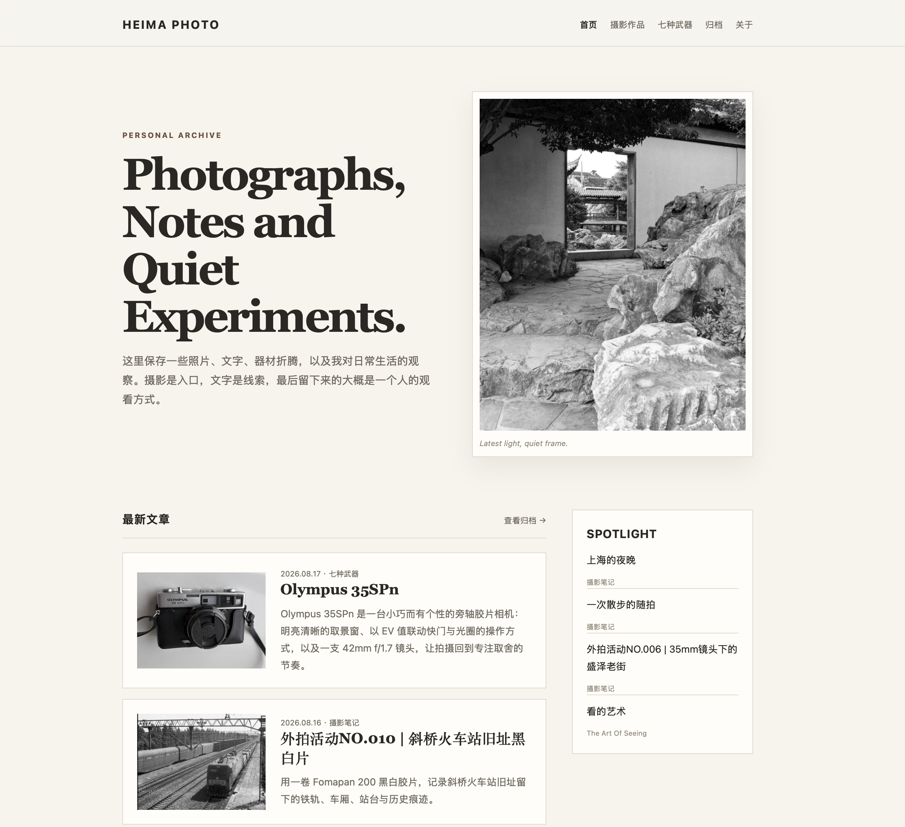
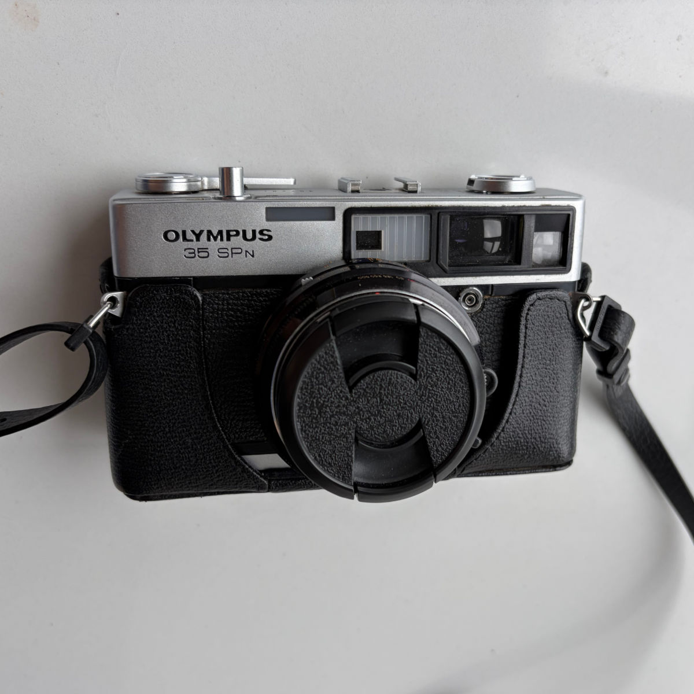
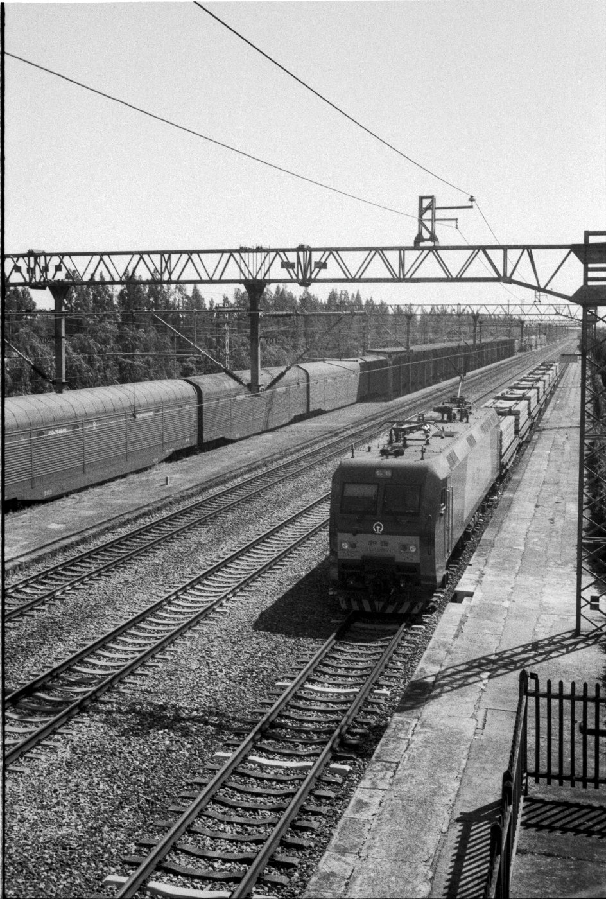

小猫圆圆五个月的时候
小猫圆圆五个月大的时候拍的照片
Personal Archive
这里保存一些照片、文字、器材折腾，以及我对日常生活的观察。摄影是入口，文字是线索，最后留下来的大概是一个人的观看方式。


小猫圆圆五个月大的时候拍的照片

盛夏近四十度的午后，我们在海宁路仲古镇走了一圈。重新修整过的老街、安静的巷子、仍在生活的居民，以及偶尔遇见的人，构成了这次短暂的记录。

从早年亲手写下的静态网页，到 2026 年由 ChatGPT 与 Codex 重新整理的界面，一份关于网站 UI 演变与再次出发的备忘。

Olympus 35SPn 是一台小巧而有个性的旁轴胶片相机：明亮清晰的取景窗、以 EV 值联动快门与光圈的操作方式，以及一支 42mm f/1.7 镜头，让拍摄回到专注取舍的节奏。

用一卷 Fomapan 200 黑白胶片，记录斜桥火车站旧址留下的铁轨、车厢、站台与历史痕迹。


A personal archive of photographs, notes and curiosities.